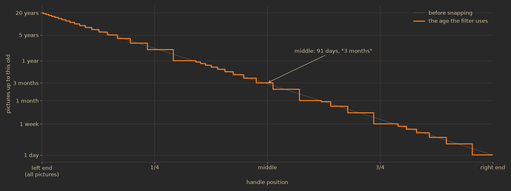
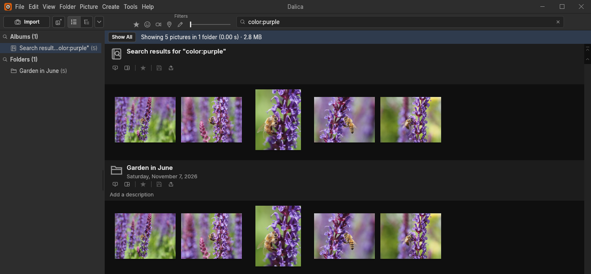
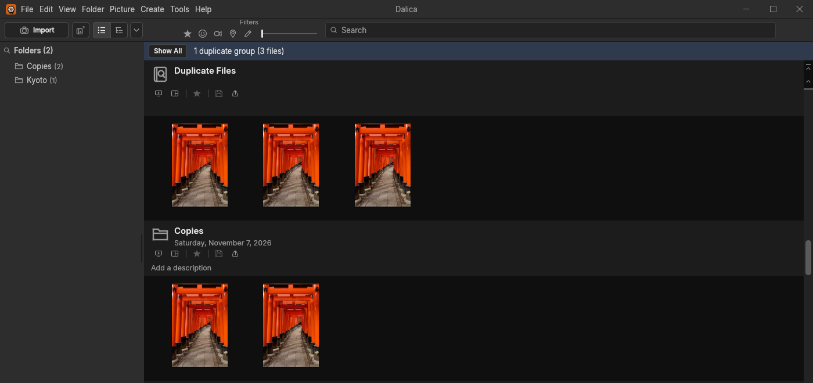

Search, color and duplicates
How the search box reads what you type, what it looks at, and how it answers a library of a hundred thousand photos between two keystrokes. Then the two searches that look at the pictures themselves: by color, read from a 24 to 26 byte sketch of each photo, and for duplicate files, proved byte for byte.
What search looks at
Search never opens a photo file. Everything it matches is already in the library index, and the search keeps its own copy of the part it needs: for every photo a small record of the words it can be found by, its flags for the filter buttons, its dates and its color summary. Folders, albums and people have records of their own, found through their photos.
Each piece of text is cut into terms: split at whitespace and at every ASCII punctuation character (dot, underscore, dash, comma, parentheses, quotes and the rest), lowercased, and cut to at most 64 bytes. So DSC_4476.jpg gives the terms dsc, 4476 and jpg, and a caption that reads (beach, at dusk) gives beach, at and dusk.
| Where the words come from | Terms it adds | Found by |
|---|---|---|
| File name | dsc, 4476, jpg | plain words |
| Caption | each word of it | plain words |
| Tags | each word of each tag | plain words, tag: |
| Date (your date, else the file's) | 2024, 2024-07, 2024-07-15 and the English month name, july | plain words |
| Pixel size as displayed | 2400x1600 | plain words |
| Camera make and model | each word of both | plain words, camera: |
| The photo's folder | the folder's name, its description and its place | plain words |
| The user albums it is in | each album's name | plain words |
| The people whose faces are on it | names and nicknames | plain words, person: |
| Its color summary | one or more of seven colors | color: |
| Unsaved edits | a flag | is:edited, the Edited button |
A folder's name, description and place are terms of the folder, not copied onto each of its photos; the same goes for album names and people's names. Renaming a folder of 2,000 photos therefore changes one record in the search index, not 2,000.
Two things are deliberately absent. The search does not look inside the file's own metadata beyond what the scan already put in the index (camera, dimensions, date), and it does not fold accents: reykjavik does not find Reykjavík, because lowercasing keeps the í.
How the box is read
The text you type is read in three steps: into words, each word into an optional operator and a value, and each value into tokens.
- Words. The text is split at whitespace, control characters and the Unicode bidirectional formatting marks (so a pasted text cannot hide where a word starts). Every word must match: several words mean AND.
- Not. A word that starts with
-leaves out the photos it matches. - Operator. If the word contains a
:, the part before the first one is compared, ignoring case, with the five operators Dalíca knows:tag,camera,person,colorandis. Anything else, such asfoo:bar, is not an error: the whole word is read as plain words,fooandbar.color:takes onlyred,orange,yellow,green,blue,purpleorbw, andis:onlyedited; another value (color:teal) turns the word back into plain words too. - Tokens. The value is cut into terms exactly as the photo's text was. Each token must be the start of one of the photo's terms in the word's field:
foxfindsfoxesandgoðfindsGoðafoss, butfossdoes not findGoðafoss, because it is not the start of the term. - Dates stay whole. A value shaped like a date, four digits then up to two more groups of up to two digits (
2026,2026-06,2026-06-04, or the half-typed2026-0), is kept as one token instead of being split at its dashes. Otherwise2026-06would mean "2026 and 06" and match any file namedIMG_0612.
There is no phrase search. A double quote is punctuation, so "Cape May" is the two words cape and may, each matched anywhere on the photo. That has a side effect worth knowing: may is also the month name, so the search finds every photo taken in May as well as every photo with "May" in its caption, unless cape rules it out.
*). The sets are intersected, the negated word's set (red) is subtracted, and what is left is the result. Note how "Cape May" becomes two independent words.Small rules that keep it predictable
- An operator with nothing after it (
tag:while you are still typing it) or a lone-narrows nothing, so the results do not flash empty as you type. - Operators combine with Not:
-tag:sunset,-color:bw,-is:edited. person:matches names and nicknames by prefix, as plain words also do. It is the People pane's own filter, which works by person id, that keeps "Ana" from finding "Anabel".- The reader is bounded: it reads at most 1 KiB of text, 32 words and 64 bytes of each token, and says the text was
truncatedwhen it left something out. A command that sends more than 16 KiB is refused. A longer word still matches on its first 64 bytes. - When an operator cannot match for want of data, the result names it as
unavailableinstead of just showing nothing:colorwhile no photo has a color summary yet,personwhile the library has no people, and the Faces button while no photo has a face. - Hidden pictures, and pictures under 64 pixels on both sides, count only when View shows them, so the banner always counts what you can see.
- An automation client that was not given the people permission searches without people's names:
person:matches nothing and plain words skip names and nicknames, while everything else matches as usual (see Automation).
From words to photos
The obvious way to search is to walk every photo and test each word against it. Dalíca keeps that version, photo by photo, as the reference its real index is tested against. The real index works the other way round, so a query costs about the same however many photos fail it.
- Slots
- Every photo gets a slot number (reused after a photo is removed). A set of photos is a bit set over the slots: 100,000 photos fit in 12.5 KB, and intersecting two sets is a loop over 1,563 machine words.
- Sorted terms
- Every term maps to the set of slots that hold it, and the terms are kept in sorted order. All the terms that start with
foxsit next to each other in that order, so one range lookup finds them, and the union of their sets is the word's set. This is why search matches prefixes: a prefix is exactly what a sorted list answers in one step. - Folders, albums, people
- A word that matches a folder's name brings in that folder's photos; the same for an album's name and a person's name. The photo records themselves never hold those words.
- Colors
- Each of the seven search colors keeps its own set of the photos whose summary holds it, so
color:greenis one set, already built.
The query then starts from the photos the filter buttons, the age slider and the view allow, intersects it with each word's set (the tokens of one word are intersected first), and subtracts the set of each -word. A lone -word is the slowest kind of query, because what is left is nearly the whole library.
Results come out in the order the light table shows them: folders in the tree's order (flat or tree view, the folder sort and its direction), each folder's photos in its own sort. Each folder's sorted list is worked out once and kept until one of its photos changes, so a result never has to be sorted. The temporary album "Search results for ..." lists the matches in that order, and Save Search as Album keeps it.
The autocomplete list reads only the last word you are typing (a leading - ignored). It offers tags, then folders, then albums, each kind ordered by how many visible photos it covers and then by name, at most 100 entries, never one that covers no visible photo. After tag: it offers only tags, after color: the seven colors with their counts, and after any other operator nothing.
Filter buttons and the age slider
The five buttons next to the search box are plain flags tested before any word: Starred; Faces (a named or unnamed face; faces you chose to ignore do not count); Videos; Geotagged (the library's own geotag, else GPS in the file); and Edited (unsaved edits, the same set as is:edited). A photo saved into its file has no unsaved edits until you edit it again, so it is not "edited" here. They combine with each other and with the text.
The age slider is one handle on a logarithmic scale. At the far left it shows everything; anywhere else the number of days is 7305(1 − position), from 20 years (7,305 days) just right of the left end down to 1 day at the right end. The result is then snapped to the unit its label speaks in: days below a week, whole weeks below 30 days, whole months below a year, whole years after that. "Pictures up to 3 months old" therefore means exactly 91 days, not 86 or 97.

The age counts whole days back from now and reads each photo's sort date: your own date if you set one, else the date from the file's metadata, else the file's modification time. A photo with no date at all still has an age. The date words that plain words match (2024-07, july) come from the effective date instead, which leaves out the modification time: a photo whose only date is when the file was last touched has no date words. A photo dated in the future always passes the age filter.
Why it answers as you type
Results change on every keystroke, yet the window never waits for a search. Three things make that work.
- A worker of its own. The first time something asks for a search, a thread starts with its own copy of the library and the index built from it. From then on every change the library makes (a new tag, a scanned folder, a star) is sent to it, and it updates its copy and the index for just the photos that change touched. The index is never rebuilt for a change. If its copy ever falls out of step with the library (after a rebuild, say), the worker is given a fresh copy.
- A 120 ms pause. A query is sent 120 ms after the last change to the text, the buttons or the slider, so five quick keystrokes run one query, not five. While a search is showing, a change to the library sends it again 120 ms later, never more often, so a running scan refreshes your results instead of flooding the worker. The worker always runs only the newest query that is waiting.
- Old answers are dropped. Every change to the query raises a generation number, and each answer carries the number of the query it answers. An answer that arrives after you typed more is thrown away rather than flashed on screen. The window's own thread only sends queries and shows answers; it never runs one.
These are the measured times on a synthetic library of 100,000 photos in 1,000 folders (each photo with a three-word caption and one or two of 30 tags, plus 100 albums of 300 photos), in a release build held to two processor cores. The budgets are 1.5 times the first measurement, and no query may ever take more than 100 ms.
| Step, 100,000 photos | Measured (median) | Budget |
|---|---|---|
| Build the search index | 417 ms | 630 ms |
| One word (13,441 matches) | 1.12 ms | 1.7 ms |
| Three words with Starred on | 0.38 ms | 0.6 ms |
A lone -word (86,559 matches) | 3.39 ms | 5.1 ms |
color:green (48,419 matches) | 3.60 ms | 5.4 ms |
| From setting the query to the result applied, pause excluded | 14.9 ms | 22.3 ms |
| The first search of a session (copies the library and builds the index) | 757 ms | not budgeted |
The banner's time, "Showing 33 pictures in 4 folders (0.01 s)", is the worker's own time for the query.
Search by color
color: finds photos by the colors they hold, and it never decodes a photo to do it. Every photo already has a color sketch: a blurred preview of at most 32 bytes that the light table draws while a thumbnail is loading. The color search reads that sketch.
The sketch it reads
The sketch is made on the thumbnail worker from the 128-pixel thumbnail, in the same job that makes the thumbnails (see Scanning). The thumbnail is averaged down to at most 32 cells on its long side and split into a lightness channel L = (r + g + b) / 3 and two color differences, P = (r + g) / 2 − b and Q = r − g. Each channel keeps only the low-frequency corner of its cosine transform: lightness 6 frequencies along the long side and at least 4 along the short one, the two color channels 4 × 4 at every aspect. Each kept coefficient is stored as a 4-bit fraction of the channel's largest one. A square photo's sketch is 26 bytes, a long thin one's 24; the 56 test photos on this page all came out at 24 or 26.
Because the colors keep 4 × 4 frequencies, a grid of 16 cells on the long side sees every color the sketch holds. The color search decodes the sketch to exactly that: 16 cells on the long side, and the short side in proportion (16 × 11 for a 3:2 landscape photo, 11 × 16 for a portrait, 16 × 12 for 4:3). That is at most 256 cells per photo.
How a cell gets its color
Each cell is turned into hue, saturation and value (HSV) from its 8-bit sRGB color.
- A cell with saturation under 0.2 or value under 0.2 has no color. That covers grays, whites and black, faint tints, and deep shadow, where a hue is mostly noise.
- Every other cell adds its saturation to the weight of the color its hue falls in. A vivid cell counts fully, a pale one partly.
From cells to a summary
The weights of the six hues are then turned into the photo's color summary, the set of colors color: matches:
- Black and white first. Add up all six weights. If the total is under 4 % of the number of cells, the photo is
bwand nothing else. A speck of color in a gray picture, or the color noise of a gray one, never makes it red. - Each color that has enough. Otherwise a color joins the summary when its weight is at least 15 % of the total colored weight. A red barn under a blue sky is red and blue; a green field with one small red flower is green only.
- The main color. The largest weight is the photo's main color (a tie goes to the first in the order red, orange, yellow, green, blue, purple).
bwnever shares a summary with a hue.
The summary is stored in the library index as one byte: three bits for the main color (0 for none, 1 to 6 for red to purple, 7 for black and white) and one bit for each of the five other hues. Each search color keeps the set of photos that hold it, which is why color:green is as fast as one word.
![Three photos analyzed. Garden: a bee on purple salvia, its sketch as a 16 by 12 grid, cells classed green on the left, purple in the middle and yellow on the right; shares green 39, yellow 33, purple 24, orange 3 percent; summary green, yellow, purple. Waterfall: an 11 by 16 grid, blue sky cells on top, dark cells with no color in the middle, yellow and green grass below; summary yellow, green, blue. Glacier lagoon: a 16 by 11 grid, almost every cell gray with no color, a few blue cells; colored weight 2.1 percent of the cells, so the summary is bw.](img/search/color-summary.png)
color: results on 55; on the last one it measures a yellow share of 13 % against the 15 % bar, because it starts from a slightly different 128-pixel thumbnail.
color:purple over the 56 test photos finds five of the six garden pictures. The sixth is mostly green: its purple share is 5 %, under the 15 % bar, so its summary is green only.Why the summary follows your edits
The summary is made from the sketch, on the thumbnail worker, in the same job that makes the sketch, and the two are stored together in one step. An edited photo's sketch is drawn from its edited thumbnail, so when you turn a photo black and white, it moves to color:bw as soon as its thumbnail is redrawn, and Undo moves it back. A rescan keeps them together the same way.
The cost is small because the pixels were already reduced to a few dozen bytes: reading a summary from a stored sketch takes about 3.5 µs, beside about 66 µs for making the sketch itself. A library indexed before color summaries existed gains them in the background from the sketches it already has, without reading a photo: for 100,000 photos every summary was in place about 963 ms after the library began to open (median; the budget is 1,445 ms). Until the first ones land, color is reported as unavailable rather than matching nothing.
Why a sketch and not the photo: a sketch is already in memory for every photo, is identical on every platform (it is computed with basic arithmetic only, never the platform's math library), and is redrawn whenever the picture changes. Reading the photo instead would mean decoding every file, and a summary that could go stale after an edit.
Duplicate detection
Dalíca's duplicates are identical files: the same bytes, whatever their names or folders. A copy you resized, re-saved or edited is a different file and is not a duplicate. The check runs in two places with the same three steps, each cheaper than the next and each ruling out most of what is left.
- Size. Two files of different sizes cannot be identical. Photos are grouped by the size recorded in the index, without touching the disk, and only sizes held by two or more photos go on.
- MD5 digest. Each remaining file's MD5 digest (kept as
md5:and 32 hex digits) is taken from the index when the index holds one that still fits the file, meaning the same size and modification time. Otherwise the file is read and the new digest is kept in the index for next time. Files with the same size and digest form a bucket. - Byte for byte. Every bucket is confirmed by reading its files and comparing them in full. MD5 is fast but not collision-proof, so the digest only decides which files are worth comparing; a digest collision can never put two different files in one group.
Across the library: Show Duplicate Files
Tools ▸ Experimental ▸ Show Duplicate Files (Ctrl+F6) runs the three steps over every photo in the library as a background job with progress and Cancel: a coordinator thread and up to 4 workers, each file read through Dalíca's file layer, at most 1 GiB per file. A file that cannot be read, is larger than that, or changes while it is being read is left out and counted as skipped. New digests go into the index as derived data, never as an undo step. Cancel stops the workers before their next file; the digests already made stay in the index.
When the job ends, the light table shows one group per section, the group with the most bytes in total first, and the banner counts them: "12 duplicate groups (31 files)". If you started a different search while it ran, your search stays on screen. A group whose files this session already confirmed (the same photos at the same size and modification time) is not read again.

While importing
The Import room uses the same idea while it lists a card or a folder, with one difference in order: each picture on the card is read once, start to end, and its MD5 digest is computed during that read, so the card's side costs no extra read. A picture is a duplicate when a library photo of the same size has the same digest and the same bytes, or when an earlier picture of the same listing does (the same photo twice on one card). The library's side starts from its photos grouped by recorded size; a library photo of a matching size without a usable digest is read once and its digest is kept in the index, so the next import and the next Show Duplicate Files do not read it again.
The check always runs. "Exclude duplicates" (whose default is Options ▸ General ▸ "Detect duplicates while importing", on) only decides whether the duplicates it finds are copied. From a camera, where reading is slow, only the pictures that could be duplicates (the same size as a library photo or as another picture on the camera) are read for their digest, at most 64 MiB each. The Import chapter follows that path in detail.
In the code
- crates/library/src/search/grammar.rs: words, operators, tokens, date spellings, the caps
- crates/library/src/search/extract.rs: what search reads of each photo, folder, album and person
- crates/library/src/search/index.rs: sorted terms, slot bit sets, prefix ranges, suggestions
- crates/library/src/search/matcher.rs: the filter buttons, the age, the photo-by-photo reference matcher
- crates/engine/src/search.rs and crates/engine/src/cmd/search.rs: the search worker, the 120 ms debounce, generations,
search.setandsearch.color - crates/ui-kit/src/widgets/age_slider.rs: the slider's logarithmic scale and snapping
- crates/thumbs/src/sketch.rs: the color sketch, its byte layout and its 16-cell grid
- crates/core/src/color_summary.rs and crates/core/src/color.rs: the classifier, its thresholds and the summary byte
- crates/thumbs/src/ladder.rs and crates/engine/src/thumbs.rs: where the sketch and its summary are made
- crates/engine/src/duplicates.rs and crates/engine/src/cmd/duplicates.rs: Show Duplicate Files
- crates/engine/src/import/worker.rs and crates/scan/src/import.rs: duplicates while importing
- docs/organizing.md §8.1 to §8.3 and §3; docs/development.md (the search, color summary and color search measurements)